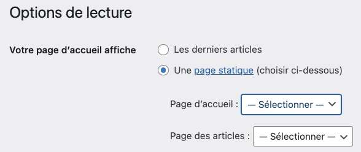

Les modèles, ou en anglais templates, sont certains des fichiers .php se trouvant à la racine d'un thème.
Ces fichiers permettent de contrôler la structure d'une ou plusieurs pages sur un site.
Par exemple, Amazon a un modèle pour sa page d'accueil, mais aussi un modèle de page de produit. Celui de la page d'accueil n'est utilisé que pour une seule page (la page d'accueil), mais celui de la page de produit est utilisé pour afficher tous les produits du site. Un seul modèle est nécessaire, donc un seul fichier php et le contenu des produits est soutiré d'une base de données pour générer des milliers de pages différentes.
Nom
Pour créer un modèle, il suffit de créer un fichier .php à la racine du thème. Dans ce fichier, immédiatement après la déclaration <?php, le commentaire Template Name permet d'indiquer à WordPress le nom du modèle en question.
Par exemple, il est possible de spécifier que le modèle product.php devrait être disponible dans le tableau de bord sous le nom Produit:
WordPress est ainsi en mesure de détecter ce fichier comme étant un modèle.
Par la suite, lors de la création ou de l'édition d'une page, un menu déroulant dans la barre latérale de droite permet de choisir le modèle à attribuer à cette page.
Onglet Page ➡️ Résumé ➡️ Modèle
Le nom donné au modèle dans le commentaire apparaîtra comme option dans ce menu déroulant.

Il est donc possible de choisir quel modèle devrait utiliser cette page.
Type de posts supportés
Les modèles ne sont disponibles que pour les posts par défaut (pages et articles). Pour qu'un modèle puisse supporter un autre type de post*, il faut lui indiquer à l'aide du commentaire Template Post Type.
(* Pour créer un nouveau type de post on le verra au prochain cours avec advance custom fields ou custom post type.)Par exemple, après avoir créé le type de post product dans le tableau de bord, le menu déroulant de choix de modèle sera absent de tous les posts de ce type, puisque par défaut aucun modèle ne supporte ce type de post.
Afin d'indiquer que le modèle Produit doit pouvoir être utilisé par les posts de type product, il faut le spécifier à l'intérieur du modèle ainsi:
Ce modèle est donc disponible dans les articles (posts), les pages et les post dont le slug est product.
WordPress tente de déterminer quel modèle afficher lors de l'appel d'une page en suivant une hiérarchie particulière 👑.
Pages 📄
Par exemple, avec l'url exemple.com/portfolio
WordPress tentera de valider en ordre si:
- Un modèle a été attribué via le tableau de bord.
- page-portfolio.php existe à la racine du thème.
- page-7.php existe. (Si l'id de la page est 7).
- Le fichier générique page.php est présent.
- singular.php existe.
- index.php existe.
Accueil
La page d'accueil est particulière. Par défaut, WordPress lui attribue son propre modèle affichant normalement les plus récents articles (posts). Le modèle qui sera pris en compte en premier sera home.php et s'il est inexistant, ce sera index.php.
- home.php
- index.php
Il est néanmoins possible de changer cette configuration et choisir une page spécifique en tant que page d'accueil. Pour ce faire, vous devez d'abord créer la page et, dans le tableau de bord, spécifier quelle sera la page qui fera office d'accueil via:
Réglage ➡️ Lecture
Dans le contexte où votre page d'accueil est une page statique, le modèle qui sera pris en compte en premier sera font-page.php.
- font-page.php
- page-7.php existe. (Si l'id de la page est 7).
- Le fichier générique page.php est présent.
- singular.php existe.
- index.php existe.
404
- 404.php
- index.php
Articles (Posts)
Les articles suivent une hiérarchie légèrement différente.
Par exemple, avec l'url exemple.com/bonjour-tout-le-monde, WordPress tente de valider en ordre si:
- single-post-bonjour-tout-le-monde.php existe.
Ce nom de fichier provient:- du préfixe single.
- du type de post, dans cet exemple celui par défaut post.
- et du slug de l'article bonjour-tout-le-monde
- single-post.php existe. Ce nom, comme le précédent, provient du préfix single et du type de post. Par exemple: si ce type avait été product, le fichier appelé aurait été single-product.php.
- single.php si aucun modèle spécifique n'est trouvé.
- ensuite singular.php
- et finalement index.php
Voici un graphique qui présente cette hiérarchie